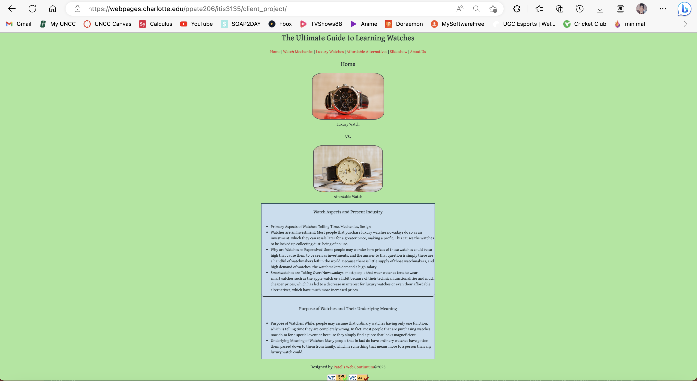

Peer Review 2
Patel, Parth

Site Page
- Every Page has a layout using header, main, and footer: Yes
- Home page is named index.html: Yes
- CSS and JS in Seperate Files: Yes
- Consistent Layout Across All Pages: Yes
- Appropriate content on home page including images: Yes
- Link to all 5 Minimum Pages (including Home) and the Links Work on all the Pages: Yes
- Navigation Bar is consistent position across pages: Yes
- Appropriate Content on each page: Yes
- Website is Aesthetically Pleasing: Yes, different colors are used acorss the website green, blue, font color is perfect, and readability is clear.
- Easy to navigate: Yes
- HTML or CSS Validation Links: Yes
- Repetition: Yes